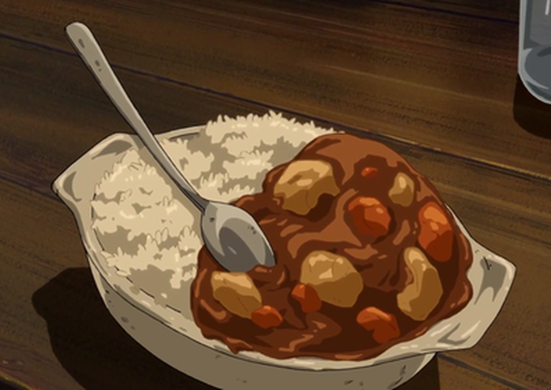

Kare raisu
Japanese curry (カレー, karē) is commonly served in three main forms: curry over rice (カレーライス, karē raisu), curry udon (curry over thick noodles), and curry bread (カレーパン, karē pan) (a curry-filled pastry).
It is one of the most popular dishes in Japan.The very common "curry rice" is most often referred to simply as "curry" (カレー, karē).
Along with the sauce, a wide variety of vegetables and meats are used to make Japanese curry. The basic vegetables are onions, carrots, and potatoes.
Beef, pork, and chicken are the most popular meat choices. Katsu curry is a breaded deep-fried cutlet (tonkatsu; usually pork or chicken) with Japanese curry sauce.

- 2 tbsp grapeseed oil
- 1 onion, diced large
- 2 carrots, peeled and diced
- 2 potatos, diced
- 1 green apple diced
- 600ml chicken stock
- 1 packet S&B Golden Curry
- 2 chicken breast, diced
- 3 spring onions, sliced thin
- salt to taste
- steamed rice
- Start by cooking rice in a rice cooker
- Heat oil in large frypan and swaet off the onions and carrots with pinch of salt
- After 5 minutes add chicken
- Once chicken is little browned, add chicken stock
- Now add potatos and simmer for 15 minutes
- After 15 minutes of cooking add apples
- Once stock come back to boil, add Golden Curry and stir through
- To serve, add the rice in a bowl and the curry next to it, garnish with spring onions